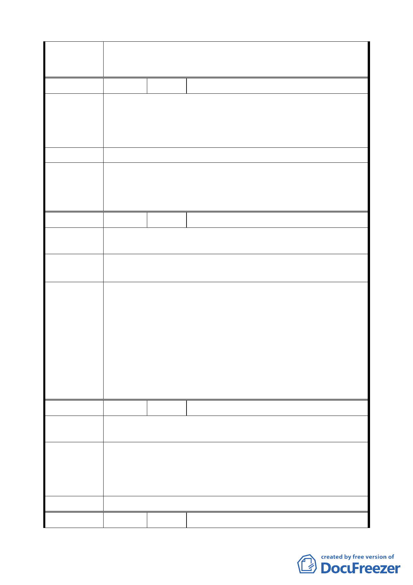

第一個完整街廓所圍地區為原則，陳情基地與南側計畫範圍內
街廓相隔 22 公尺八德路四段計畫道路，非位於兩側進深第一
個完整街廓所圍地區，本項仍依公展計畫辦理。
編
號5
陳情人 張建容
一、光復南路 66 巷僅供一部車子可通行，不符巷道（單行道）。
陳情理由
二、兩邊房子二層樓老舊，急需改建。
三、兩邊房子僅有 30 坪，若不廢巷，殊為可惜。
四、將住三與住三之ㄧ共同合建，廢巷才有改建，以利市容。
建 議 辦 法 請廢除光復南路 66 巷。
本案已將光復南路 66 巷兩側街廓編號 D7、D8 及 D9、D10 等 4
委員會決議
處街廓納入「指定合併街廓開發範圍」，以獎勵合併開發方式，
將其街廓間之計畫道路以等面積調整移設與周邊相鄰道路合
併或作為開放空間使用之公共設施用地。
編
號6
陳情人 傅素娟
陳 情 理 由 位置：中山區安東街 17 號 3 樓。
建議辦法
一、改為商業區。
二、建蔽率及容積率增加。
1、本案原變更市民大道兩側地區第 4-1 種、第 4 種、第 3-2
種、第 3-1 種、第 3 種住宅區及道路用地為第 3 種商業區
（特），除建蔽率以原建蔽率加 5％計算外，土地使用分區
管制悉依 84 年公告實施之「修訂臺北市主要計畫商業區
委員會決議
（通盤檢討）計畫案」相關規定辦理，經提送 96.3.13 內政
部都委會第 654 次審議決議（略以）：「本案仍應維持原計
畫。」。
2、本案已研提時程獎勵及劃定全區為都市更新地區以適用都
市更新條例各項容積獎勵作為開發誘因，本項仍依公展計
畫辦理。
編
號7
陳情人 林紀文
陳 情 理 由 位置：松山區八德路三段 12 巷 61 號。
一、建蔽率要增加 60％。
建議辦法
二、容積率要增加 300％。
三、時程獎勵時間要長一些 3 年。
四、改為商業區。
委 員 會 決 議 同編號 6。
編 號 8 陳情人 賴秀惠
7